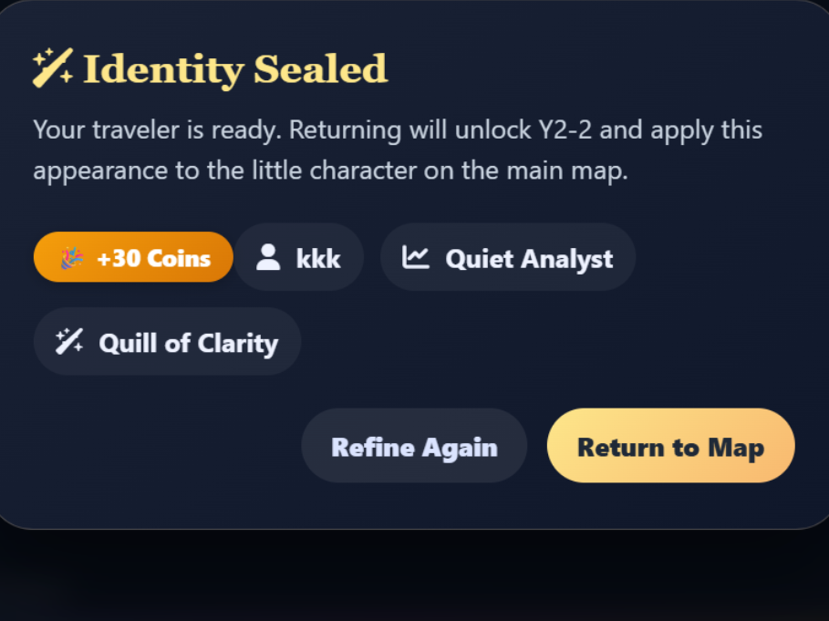
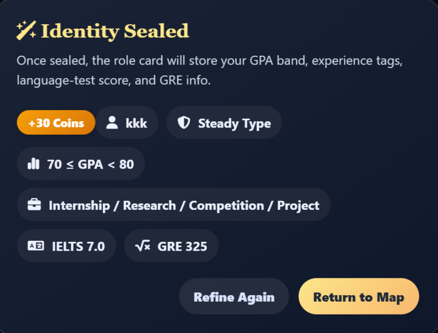

Method
Peer walkthroughs
Used to test whether the journey structure and page hierarchy feel understandable.
E. Evaluation & Reflection
Usability Testing
Method
Used to test whether the journey structure and page hierarchy feel understandable.
Method
Used to assess clarity, consistency, and whether gamified elements remain appropriate.
Method
Used to identify where task guidance and comparison information still need sharpening.
Findings
The journey metaphor improves engagement, but users still need direct access to deadlines and next actions.
Comparison support is essential because motivation alone does not reduce decision complexity.
Playful elements are most credible when paired with explicit requirements and advisor checkpoints.
Iterative Refinement
Add clearer stage completion states and a stronger sense of readiness.
Support shortlisting, criteria weighting, and requirement review more directly.
Keep feedback motivating, but avoid visual elements that feel too game-like for academic planning.
Iterative Refinement


Final Reflection
Learning
The most valuable design move was not adding playful visuals, but re-organising the journey into a form that users can understand and act on.
Limitations
Future iterations should include deeper user testing, higher-fidelity task flows, and stronger evidence around how students compare options over time.
Ethics and AI use
Any AI-assisted content, planning suggestions, or design support should be checked against user evidence, course expectations, and the risk of oversimplifying high-stakes decisions.
Individual Contributions
| Member | Student ID | Contribution Focus |
|---|---|---|
 Danyi Huang
Danyi Huang
|
2364444 | 🎯 Contribution focus: concept framing, motivation narrative, and communicating the value of a gamified planning journey. Structured the initial problem space and translated user pain points into a clear and engaging design vision, supporting early-stage direction setting. |
 Yuxin Zou
Yuxin Zou
|
2361355 | 🎯 Contribution focus: user context synthesis, interaction critique, and improving how complex information is communicated. Analysed user behaviour and refined interaction clarity, ensuring information is structured, accessible, and aligned with user understanding. |
 Yihan Fu
Yihan Fu
|
2362845 | 🎯 Contribution focus: journey planning logic, interface structuring, and step-by-step flow refinement. Developed the progression structure and supported the user journey design, ensuring a coherent and intuitive experience across different stages. |
 Xinlan Wu
Xinlan Wu
|
2361130 | 🎯 Contribution focus: portfolio restructuring, system design integration, and journey interaction logic. Translated literature insights into structured requirements and supported the alignment of user needs, HCI principles, and the final case-study presentation. |